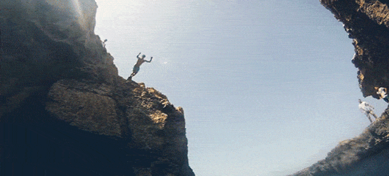
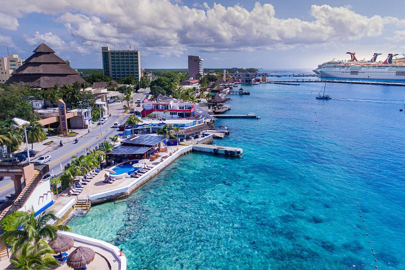
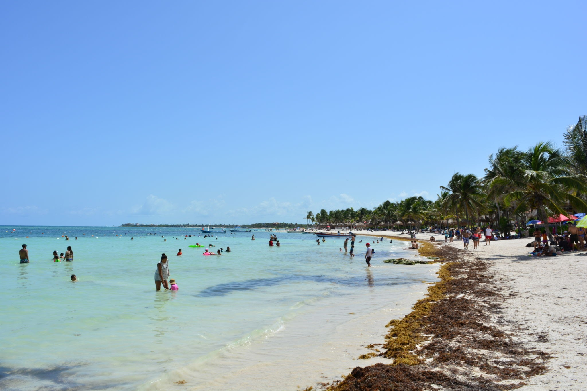
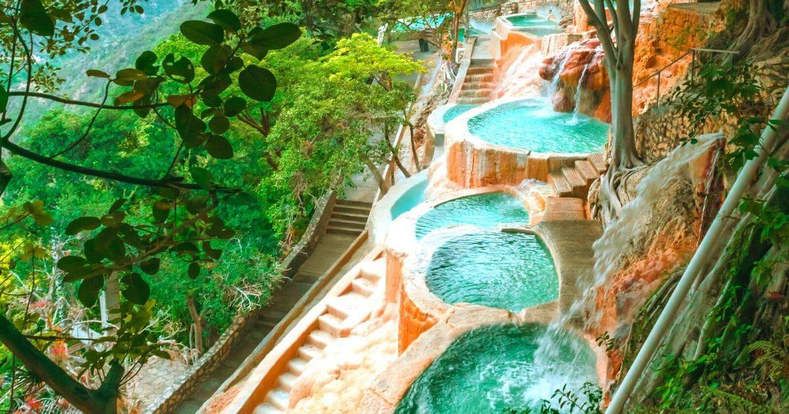
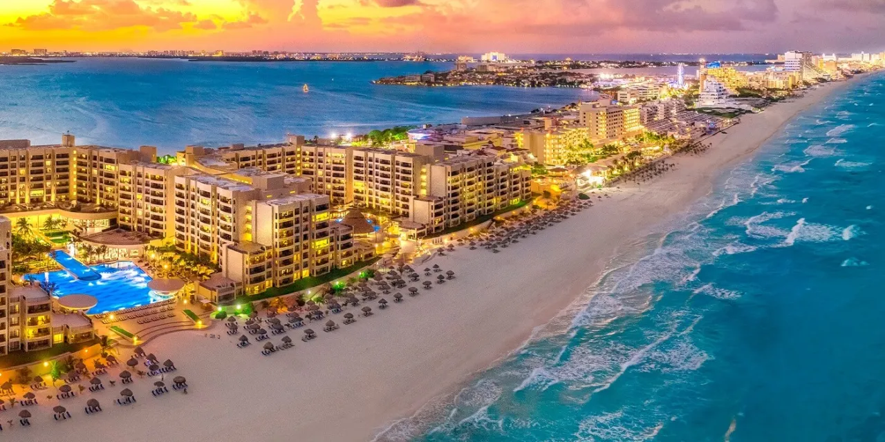

<!DOCTYPE html>
<html>
    <head>
        <title></title>
        <link rel="stylesheet" type="text/css" href="css/cultura.css">
    </head>
</html>
<body>
    <body bgcolor="#01496d"></body>
        <div id="natural">
            <header>
                <div id="logo">
                    <div align="center">
                        <a href="index.html"> </a>
                    </div>
                </div>
                <nav class="menu">
                    <ul>
                        <li><a href="index.html">Inicio</a></li>
                        <li><a href="categorias.html">Categorias</a></li>
                        <li><a href="conocenos.html">Conocenos</a></li>
                        <li><a href="iniciar sesion.html">Iniciar Sesión</a></li>
                    </ul>
                </nav>
            </header>
        </div>
        <section id="desc_cultural">
            <p>
                <br>
                <h2 align="center"><br><br>PLAYAS<br><br></h3>
                    <h4 align="center"> Te gusta visitar lugares los cuales te permiten relagarte <br>
                        o salir de lo cotidiano, pues dejame decirte que estas en en apartado adecuado ya que podras
                        apreciar los lugares mayormente visitados en Mexico,<br> los cuales  te ayudaran
                        a pasar un buen rato y con diversas actividades para <br>que disfrutes tu estancia.
                        
                    </h4>
                </p>
            </p>
        </section>
        <div class="galeria">
            <div class="linea"></div>
            <div class="contenedor-imagenes">
                <div class="imagen">
                    
                    <div class="overlay">
                        <h2>Cozumel<br><a href="https://www.caribemexicano.travel/isla-cozumel/" target="_blank" >Ver mas</a></h2>
                    </div>
                </div>
                <div class="imagen">
                    
                    <div class="overlay">
                        <h2>Akumal<br><a href="https://www.bahia-principe.com/es/hoteles-en-riviera-maya/resort-akumal/" target="_blank" >Ver mas</a></h2>
                    </div>
                </div>
                <div class="imagen">
                    
                    <div class="overlay">
                        <h2>Cabo San Lucas<br><a href="https://www.visitaloscabos.travel/lugares-para-visitar/cabo-san-lucas/" target="_blank">Ver mas</a></h2>
                    </div>
                </div>
                <div class="imagen">
                    
                    <div class="overlay">
                        <h2>Grutas de Tolantongo<br><a href="http://www.grutastolantongo.com.mx/transporte.html" target="_blank">Ver mas</a></h2>
                    </div>
                </div>
                <div class="imagen">
                    
                    <div class="overlay">
                        <h2>Isla de mezcala<br><a href="https://visitjalisco.com.mx/guia-para-un-viaje-por-la-isla-de-mezcala/" target="_blank">Ver mas</a></h2>
                    </div>
                </div>
                <div class="imagen">
                    
                    <div class="overlay">
                        <h2>Isla de los alacranes<br><a href="https://www.tripadvisor.com.mx/Attraction_Review-g2371486-d4945374-Reviews-Isla_de_los_Alacranes-Chapala.html" target="_blank">Ver mas</a></h2>
                    </div>
                </div>
                <div class="imagen">
                    
                    <div class="overlay">
                        <h2>Acapulco<br><a href="https://www.visitmexico.com/guerrero/acapulco" target="_blank">Ver mas</a></h2>
                    </div>
                </div>
                <div class="imagen">
                    
                    <div class="overlay">
                        <h2>Puerto escondido<br><a href="https://www.visitmexico.com/oaxaca/puerto-escondido" target="_blank">Ver mas</a></h2>
                    </div>
                </div>
                <div class="imagen">
                    
                    <div class="overlay">
                        <h2>Cancun<br><a href="https://www.caribemexicano.travel/cancun/" target="_blank">Ver mas</a></h2>
                    </div>
                </div>
                <a href="javascript:history.back()">Anterior
                <a href="aventura.html"> Siguiente
            </div>   
        </div>
        <section id="izq">
            <p><h3>Encuentranos como:
                <p> Mi México
                    <iframe src="https://www.google.com/maps/embed?pb=!1m18!1m12!1m3!1d3764.75835838479!2d-98.9876027855905!3d19.33628914876495!2m3!1f0!2f0!3f0!3m2!1i1024!2i768!4f13.1!3m3!1m2!1s0x85ce1d66790d48ab%3A0x511207a1a7a61918!2sTecNM%20Campus%20Iztapalapa%20III!5e0!3m2!1ses!2smx!4v1647914553038!5m2!1ses!2smx" 
                    align="right" width="900" height="350" style="border: 2;" allowfullscreen="" loading="lazy" hspace="20"></iframe></p>
                <p> Mi_México</p>
                <p> Mi_México_Bello</p>
                <p> 5632726519</p> </h3> 
            </p>
        </section>
    </body>
</body>
